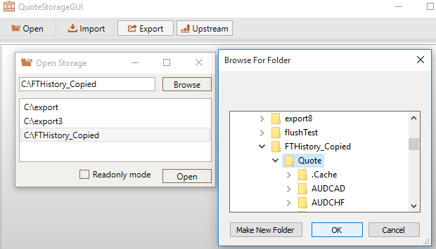
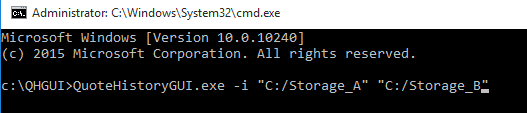
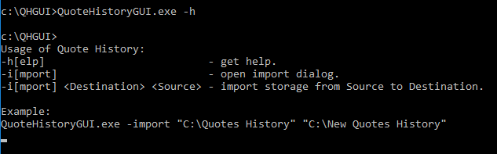
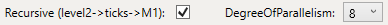
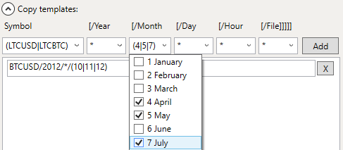
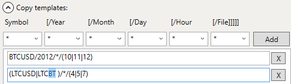

The Open button calls the Open dialog when it is possible to browse or choose from the list path to quote storage. Then after pressing the Open button in the dialog it tries to open this storage in GUI tool

The Import button calls the Import dialog when it is possible to import all files or file matched by templates from another storage.
The Import All radio button makes tool import all files and Import by template radio button allows to select files for import with template control.
Also import can be done in Console mode by calling exe file with -import or -i parameter with source and destination pathes. For more information use -help/-h parameter with executable from console


The Upstream button calls the Upstream dialog when it is possible to perform generation ticks files from ticks level2 files and M1 files from ticks files.
If storage contains only ticks level2 files, upstream will make only ticks file. In this case if you need to get M1 files too check the Recursivae check box. Then the M1 files will be generated too.
Serialization of large ticks level2 files requires a lot of processor time. It is possible to get better performance with parallel upstream work. The Degree of parallelism drop box allows to optimize working time.

Files for upstream update must be selected with template control.
The Export button calls the Export dialog when it is possible to export all files or file matched by templates to another storage.
The Export All radio button makes tool export all files and Export by template radio button allows to select files for export with template control.
The template dialog allows to select files for commads with different dates and files types. Drop boxes allow to easily edit path in template. The Add button adds current template to current template set. Templates in template set can be modifyed manually.

